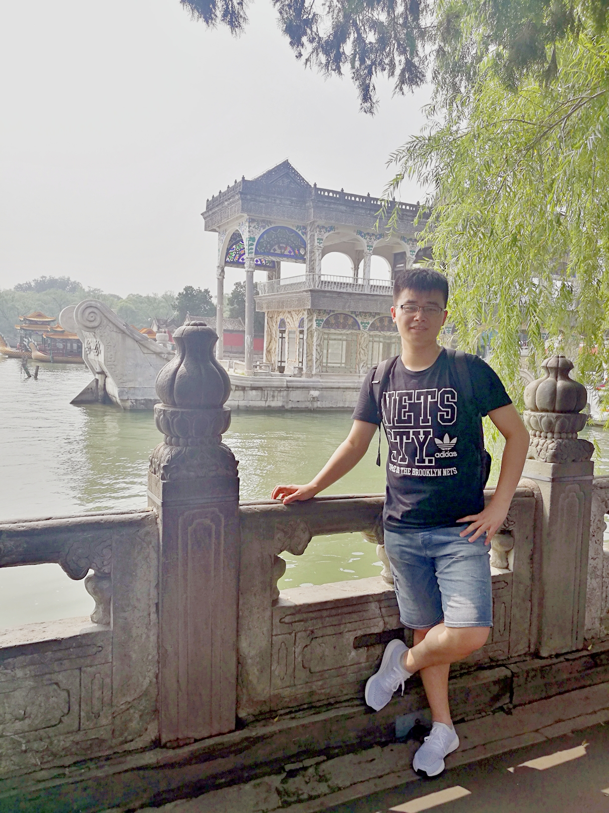

|  | Liang Liao (廖良)Research Fellow, S-lab, Nanyang Technological UniversityI am currently working with Prof. Weisi Lin as a Research Fellow at Nanyang Technological University (南洋理工大学). Before this, I worked with Prof. Shin'ichi Satoh as a postdoctoral researcher at the National Institute of Informatics (国立情報学研究所), Japan. I received my Ph.D. degree at National Engineering Research Center for Multimedia Software, School of Computer Science, Wuhan University (武汉大学) with honors in Jun. 2019, advised by Prof. Ruimin Hu. I received my B.Eng. degree at the International School of Software, Wuhan University in Jun. 2013. My research interests focus on visual signal coding, restoration, and understanding, particularly its applications to video compression, image inpainting, low-quality image analysis, and video quality assessment.
|
Jul., 2022 - Call for Papers: Submission Deadline: Feb. 28, 2023. Applied Sciences Special Issue on "Recent Advances in Image Processing".
Jul., 2022 - Four papers are accepted by ACM MM 2022, ECCV 2022, and ICIP 2022, respectively
Apr., 2022 - We are honored to invite three IEEE Fellows from academia and the Executive R&D Director from SenseBrain as the Keynote Speakers
Apr., 2022 - We are hosting an ACM MM 2022 Workshop. Details please refer to our Website
Apr., 2022 - One paper about scene understanding under adverse weather is accepted by TIP
Mar., 2022 - One paper about space-time video super-resolution is accepted by CVPR 2022
Feb., 2022 - I started as a Research Fellow at S-lab, Nanyang Technological University
Jan., 2022 - The personal website is online (Github)
Oct., 2019 - I started as a post-doctor at National Institute of Informatics, Japan
Jun., 2019 - I got PHD degree from Wuhan University
DisCoVQA: Temporal Distortion-Content Transformers for Video Quality Assessment
Haoning Wu, Chaofeng Chen, Liang Liao, Jingwen Hou, Wenxiu Sun, Qiong Yan, and Weisi Lin
arXiv:2210.05357
Neighbourhood Representative Sampling for Efficient End-to-end Video Quality Assessment
Haoning Wu, Chaofeng Chen, Liang Liao, Jingwen Hou, Wenxiu Sun, Qiong Yan, Jinwei Gu and Weisi Lin
arXiv:2206.09853
FAST-VQA: Efficient End-to-end Video Quality Assessment with Fragment Sampling
Haoning Wu, Chaofeng Chen, Jingwen Hou, Liang Liao, Annan Wang, Wenxiu Sun, Qiong Yan, and Weisi Lin
ECCV 2022
Exploring the Effectiveness of Video Perceptual Representation in Blind Video Quality Assessment
Liang Liao, Kangmin Xu, Haoning Wu, Chaofeng Chen, Wenxiu Sun, Qiong Yan, and Weisi Lin
ACM MM 2022
Progressive Spatial-temporal Collaborative Network for Video Frame Interpolation
Mengshun Hu, Kui Jiang, Liang Liao, Zhixiang Nie, Jing Xiao, and Zheng Wang
ACM MM 2022
Reference-guided Texture and Structure Inference for Image Inpainting
Taorong Liu, Liang Liao*, Zheng Wang, and Shin'ichi Satoh
ICIP 2022
Unsupervised Foggy Scene Understanding via Self Spatial-Temporal Label Diffusion
Liang Liao, Wenyi Chen, Jing Xiao, Zheng Wang, Chia-Wen Lin, and Shin'ichi Satoh
TIP 2022
Mengshun Hu, Kui Jiang, Liang Liao, Jing Xiao, Junjun Jiang, and Zheng Wang
CVPR 2022
Weakly-supervised Learning with Complementary Heatmap for Retinal Disease Detection
Qier Meng, Liang Liao, and Shin'ichi Satoh
TMI 2022
Capturing Small, Fast-Moving Objects: Frame Interpolation via Recurrent Motion Enhancement
Mengshun Hu, Jing Xiao, Liang Liao*, Zheng Wang, Chia-Wen Lin, Mi Wang and Shin'ichi Satoh
TCSVT 2022
李雅婷，肖晶， 廖良，王正，王密
中国图象图形学报学报 2022
Image Inpainting Guided by Coherence Priors of Semantics and Textures
Liang Liao, Jing Xiao, Zheng Wang, Chia-Wen Lin, and Shin'ichi Satoh
CVPR 2021
Uncertainty-Aware Semantic Guidance and Estimation for Image Inpainting
Liang Liao, Jing Xiao, Zheng Wang, Chia-Wen Lin, and Shin'ichi Satoh
JSTSP 2021
Guidance and Evaluation: Semantic-Aware Image Inpainting for Mixed Scenes
Liang Liao, Jing Xiao, Zheng Wang, Chia-Wen Lin, and Shin'ichi Satoh
ECCV 2020
Learned Representation of Satellite Image Series for Data Compression
Liang Liao, Jing Xiao, Yating Li, Mi Wang, and Ruimin Hu
Remote Sensing 2020
Motion Feedback Design for Video Frame Interpolation
Mengshun Hu, Liang Liao, Jing Xiao, Lin Gu, and Shin'ichi Satoh
ICASSP 2020
Artist-Net: Decorating the Inferred Content With Unified Style for Image Inpainting
Liang Liao, Ruimin Hu, Jing Xiao, and Zhongyuan Wang
IEEE Access 2019
CISI-net: Explicit latent content inference and imitated style rendering for image inpainting
Jing Xiao, Liang Liao*, Qiegen Liu, and Ruimin Hu
AAAI 2019
Edge-Aware Context Encoder for Image Inpainting
Liang Liao, Ruimin Hu, Jing Xiao, and Zhongyuan Wang
ICASSP 2018
An Analysis-Oriented ROI Based Coding Approach on Surveillance Video Data
Liang Liao, Ruimin Hu, Jing Xiao, Gen Zhan, Yu Chen, and Jun Xiao
PCM 2016
Criminal Investigation Oriented Saliency Detection for Surveillance Videos
Yu Chen, Ruimin Hu, Jing Xiao, Liang Liao, Jun Xiao, and Gen Zhan
PCM 2016
Jing Xiao, Zhongyuan Wang, Yu Chen, Liang Liao, Jun Xiao, Gen Zhan, and Ruimin Hu
Software: Practice and Experience 2016
Knowledge-based Coding of Objects for Multi-source Surveillance Video Data
Jing Xiao, Ruimin Hu, Liang Liao, Yu Chen, Zhongyuan Wang, and Zixiang Xiong
TMM 2016
Exploiting Effects of Parts in Fine-grained Categorization of Vehicles
Liang Liao, Ruimin Hu, Jing Xiao, Qi Wang, Jun Xiao, and Jun Chen
ICIP 2015
Exploiting global redundancy in big surveillance video data for efficient coding
Jing Xiao, Liang Liao, Jinhui Hu, Yu Chen, and Ruimin Hu
Cluster Computing 2015
Non-overlapped Multi-source Surveillance Video Coding Using Two-Layer Knowledge Dictionary
Yu Chen, Jing Xiao, Liang Liao, and Ruimin Hu
PCM 2015
Global coding of multi-source surveillance video data
Jing Xiao, Yu Chen, Liang Liao, Jinhui Hu, and Ruimin Hu
DCC 2015
Guest Editor of Applied Sciences (IF: 2.838) Special Issue on “Recent Advances in Image Processing”
Chair of ACM MM 2022 Workshop “UoLMM - Robust Understanding of Low-quality Multimedia Data: Unitive Enhancement, Analysis, and Evaluation”
Co-chair of ICME 2022 Special Session “Robust Representation Learning for Multimedia Image Understanding”
Co-chair of ACM MM Asia 2021 Workshop “Visual Tasks and Challenges under Low-quality Media Data”
Served as reviewer for journals and conferences including IEEE TIP, IEEE TMM, IEEE TCSVT, NeurIPS, ICLR, CVPR, ICCV, ECCV, ACM MM, AAAI, ICMR, ICME, etc.
Served as the chair of Graduate Student Forum of National Research Center for Multimedia Software Technology, Wuhan University (2014.07-2015.12).
Won the Bronze Prize of the 5th China Internet+ Innovation and Entrepreneurship Competition.
Awarded the Second Prize of Academic Innovation of Wuhan University in 2019